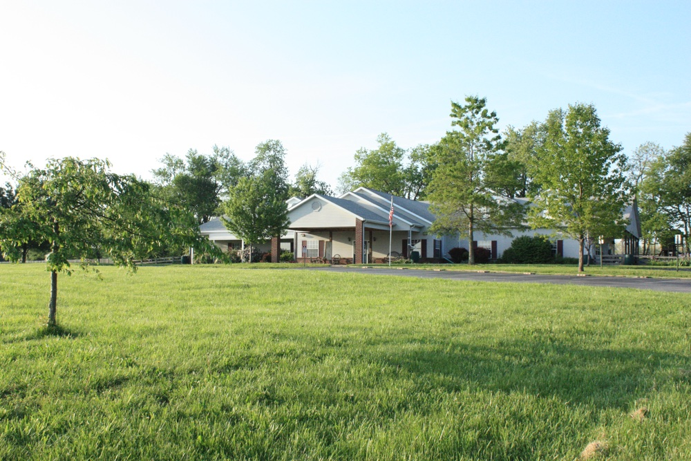

In 1965, in Lexington, the first Kentucky Montessori school opened. Among the students of that inaugural class was a young three year old boy named Tony Guagliardo. Tony was the youngest of five children, raised by two working parents who struggled to make ends meet, yet who realized the sustaining value of a Montessori educational experience.
Flash forward to 1986, and Tony is finishing college at the University of Kentucky. During that year he met, wooed and married René. Just days after their wedding they arrived in Perugia, Italy to take their Association Montessori International (AMI), Montessori Primary training.
They were completely submerged in their studies under the direction of Signorina Paolini. The Signorina Paolini was one of the individuals who worked with Dr. Maria Montessori, dedicating her life to Maria’s ideals about child development. In the spring of 1987, after taking written, oral and practical exams from an international board of examiners, Tony and René received AMI Primary diplomas and returned to Kentucky.
In July of 1987, Tony and René bought a church and parsonage in Versailles, Kentucky and opened the town’s first Montessori school called Montessori’s House of the Children. They started with twelve children between the ages of three and six years. Seven years later in May 1994, Versailles Montessori School was incorporated in Kentucky, received tax exempt status from the IRS and by the fall of that year expanded their services by offering a toddler program and an elementary class.
In September of 1997, the school's campus relocated onto 10 acres of donated land allowing for outdoor science opportunities, organic gardens, a sporting field, small farm animals, a small orchard, wildflower areas, and bird sanctuaries.
The school's new building includes rooms for the toddler, primary and elementary classes, along with a staff lounge, laundry room, basement and office space for administration. Each classroom exits onto an 8 foot wide covered porch and fenced play area. The elementary program has regular access to a 1,900 sq. ft. library/media center.
At the end of the 2010/11 school year, after 24 years of dedicated service, René retired from VMS. Tony carries on with the vision he had entering college, that which was inspired by his own Montessori educational foundation ~ to make this incomparable Montessori approach to learning available to as many children as possible.